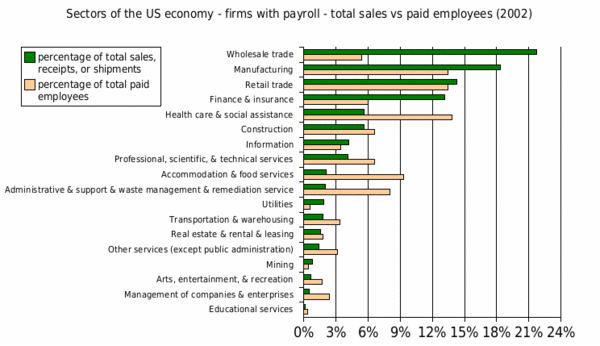

Macroeconomics
Lectures
Models
Quizzes
Chapter 5
Macroeconomic Measurement
28 slides
Contents · 28 slides
Macroeconomic Measurement Why Measure? National Accounts Conventions about Sectors Households and Institutions Business Sector Government Sector Foreign Sector Conventions about Capital Stocks Manufactured Capital Types of Capital Gross Domestic Product GDP Definition Three GDP Approaches Household Production Final Good Intermediate Good GDP, Product Approach GDP, Spending Approach GDP, Income Approach Nominal Versus Real GDP Nominal Versus Real GDP Nominal Versus Real GDP Nominal Versus Real GDP Price Index Price Index Problem 6 Problem 7
1 Macroeconomic Measurement
2 Why Measure?
3 National Accounts
Our economic “data” reflect choices about what to count and how to count it.
4 Conventions about Sectors
5 Households and Institutions
Institutions: non-profit hospitals, museums, universities, trade unions, charities
8 Foreign Sector
9 Conventions about Capital Stocks
10 Manufactured Capital
In national accounts, we don’t include:
Human capital
Natural capital
Social capital
We might question this!
12 Gross Domestic Product
13 GDP Definition
A measure of the total value of final goods and services newly produced in a country in a period of time (usually one year).
14 Three GDP Approaches
Value of production = Value of Spending = Value of Income
15 Household Production
An anomaly: If a man marries his maid, GDP goes down
17 Intermediate Good
19 GDP, Spending Approach
21 Nominal Versus Real GDP
22 Nominal Versus Real GDP
23 Nominal Versus Real GDP
Real and Nominal GDP (Trillions of $)
Real GDP (Chained 2000 $) -- Blue
24 Nominal Versus Real GDP
25 Price Index
Consumer price index: an index measuring changes in prices of goods and services bought by households
27 Problem 6
Suppose a simple economy produces only pillows and rugs. In year 1, 50 pillows are produced and sold for $5 each; 11 rugs are produced and sold for $50 each. In year 2, 56 pillows are produced and sold for $5 each; 12 rugs are produced and sold for $60 each.
What is the nominal GDP in each year?
What is the growth rate of NGDP?
What is real GDP in constant year 1 dollars?
What is the growth rate of that real GDP?
28 Problem 7
Using the simple economy from problem 6:
Calculate a constant-weight price index for the second year, using the first year as the base.
What is the inflation rate from year 1 to year 2?